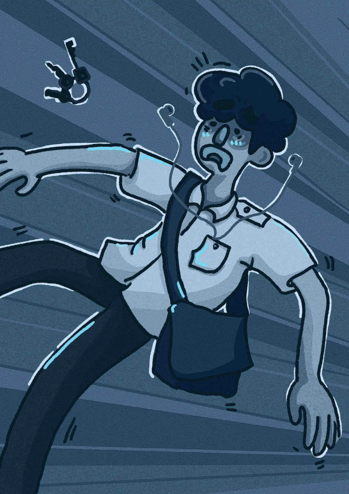

第0章 開端

「唉！」輕輕嘆了一口氣，小樹不耐地捋平濕皺的襪子，雙足扭動探入，冬日黏膩的陰雨瞬吸而上，啪唧啪唧從腳掌灌滿足踝，像飽餐後不饜的水蛭，仍舊貪婪。
跟水蛭一樣甩不開的，還有這一週的爛心情。
小樹用力打開殘破的「半自動傘」，雨水順著傘頂的裂縫，不斷滲進緊握傘柄的左手，右手拽著學校斜背包，奮力對抗呼嘯的狂風。
返家的公車暴雨癲狂，搖晃中，小樹戴上耳機，冀望在降噪的平靜裡建築他專屬的天晴。身為學校流音社社長，放空時最喜歡的卻是抖音神曲，情緒化的旋律，搭配華麗而不知所云的詞句，就是一個爽，簡單，不複雜！
震動的手機不斷跳出訊息，一則比一則還奪命：社團大成、學習歷程檔案上傳，還有媽媽⋯⋯。小樹眉頭緊皺，自從兩年前搬到台北讀書，假日就常常被叫回去宜蘭老家看外婆。也不是說跟外婆沒什麼感情，只是因著來回奔波而錯過了許多社團聯誼。往返之間，漂泊感漸增，心中的焦慮也隨之升高。
「齁，又來了，煩欸！」看著那些精心設計的「情勒」段落，迅速滑掉媽媽的訊息，關閉螢幕。「怎麼就沒有《台北男子圖鑑》呢？」小樹不禁發牢騷，斜睨窗外，心裡暗自說道：「反正同學都笑稱台北以外為南部，我也可以是主角。」
「下一站，財政園區。」公車停靠，小樹拖著一身水氣，捲入另一層氤氳世界。不遠處，六十多歲的伯伯，裹著輕薄雨衣，蜷縮在塑膠椅上，穩住房屋廣告大大的路牌。家附近的便利商店轉角，每天都有不同的叔伯阿姨舉牌站崗，風雨中，小樹不禁多看了兩眼。
「啪！」挾帶風勢，濕漉漉的紙狀物黏在口罩和臉頰交界，壓抑住到口的髒話，小樹取下一看，原來是議員競選廣告單。「真是的，都選完多久了，還有這垃圾廣告單和街上醜不拉機看板，要不是18歲複決沒過，後年我就⋯⋯用選票教訓你們喔，哼哼。」悻悻然隨手一扔，落在一旁低窪處，濺起水珠。候選人泡爛的臉龐，勾起一抹詭異的笑，冷冷目送小樹遠去的背影。
老舊公寓配備獨特霉味，小樹憋著氣，翻找前面暗袋裡的鑰匙。「啊哈，有了。」摸到鑰匙，腳步也跟著雀躍起來。不料，腳上一滑，踉蹌中，手中物品四散，身子一軟，癱倒在地，緊接著一陣天旋地轉。